Objectives
Create a walking skeleton of the Android MyTweet assignment 2 app.
Client-Server
In this lab we develop a walking skeleton of the MyTweet assignment application, building on your completed version of assignment 1.
The information provided should help you to:
- Develop the Android client-side app by continuing development of your assignment 1 MyTweet app.
- Create the corresponding server-side Play app, deploying on both localhost and Heroku.
- Create a JUnit app to test the system by creating, reading and deleting data across the network.
- Create a web app.
During the summer school we developed Donation, MyRent and WitPress apps using the Play framework.
- These were web apps. That is, they could be run in a web browser.
- We deployed these apps both locally (localhost) and on the cloud (Heroku).
- In both cases the model data is tightly bound to (is part of) the application.
In this semester we have developed Donation, MyRent and MyTweet as mobile apps using the Android development framework.
- These are native Android apps and can be run on an emulator (Genymotion or Android) or on a physical device (Android Smart Phone or Tablet).
- Unlike the summer school Play apps, these apps cannot be run in a web browser.
- As with the Play apps, the data is tightly bound to the application.
In this lab we:
describe how to modify a MyTweet type app so that:
- The data may be transmitted across the network to be stored and manipulated in a customised Play app on a server.
- The server may return data to MyTweet such as a list of tweets genererated in an earlier sessions.
- The data may also be saved on the client-side in the MyTweet Android app.
- The server may reside on the localhost or the cloud such as Heroku (or on both).
develop a corresponding Play server-side web service app (MyTweet service):
- This app can be accessed by any client designed to consume the MyTweet service API.
- In the case of this assignment you will be using the MyTweet native Android app to access this server app and also the JUnit test client.
- You could, however, also develop other clients, such as iOS, Windows phone or web-based clients.
- This could be achieved without any modifications to the server app: the only requirement is that the client is suitably configured to communicate with the server api.
write a JUnit test app
MyTweet (Android client side app)
MyTweet refactoring: This essentially comprises the following steps:
- We add a suite of software (a HTTP API) to the Android client app (MyTweet) that allows it to communicate with a server-side app that we shall deploy in the cloud on Heroku.
- At appropriate locations within the existing MyTweet app we will invoke http methods to communicate across the network with our server-side app and create, read and delete data, namely tweets or tweeters.
- Data that we read will be transmitted from the server and received by the client (MyTweet), stored in memory and also, optionally, on disk (depending on how you design your app).
- In this lab we have left the legacy serialization code in place so that server data, once transmitted to the client, is saved to a file.
- When MyTweet composes and tweets, the tweet will be transmitted across the network, received by the server-side app and stored in its model in the cloud.
- When we delete tweets or tweeters, the data is deleted both on the phone or emulator and on the server.
- Data that we read will be transmitted from the server and received by the client (MyTweet), stored in memory and also, optionally, on disk (depending on how you design your app).
TweetService (Play server-side app)
- We create a new Play app in the usual way.
- The model layer is developed to closely mirror the model in the MyTweet client-side apps.
- Initially we do not develop a set of views (templates) as was the case in the summer school projects.
- The MyTweet client-side app provides the view functionality.
A study of Figures 1, 2 and 3 below may provide further insight into the process.
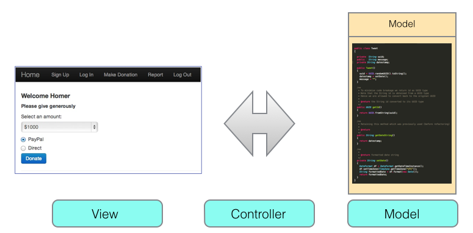
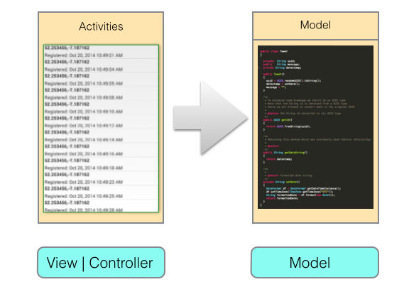

Development
In this lab we develop a walking skeleton of the MyTweet assignment application, building on a completed version of assignment 1.
The assignment comprises the development of:
- Client-side MyTweetTest app
- Client-side MyTweet native Android app
- Server-side TweetService app
- Web app
The server-side app should be deployed both on localhost and the cloud.
The MyTweetTest should test against the server-side app (TweetService) deployed on both localhost and the cloud.
The Android client app (MyTweet) should be tested against TweetService running on both localhost and the cloud.
Figure 1 illustrates this sequence.
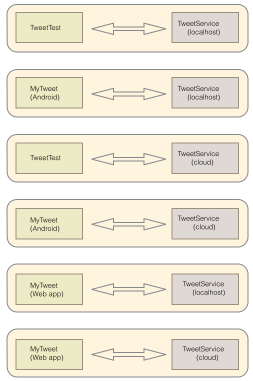
Suggested development approach
Here is one approach you might consider adopting:
- Use git from the outset. Create individual repositories, one for each of service, service test client and Android client.
- Develop in iterations similar to how you developed the summer school labs.
- Make regular commits, taking care with how you compose commit messages.
- Add tags at key points in the development. Ensure that the choice of tag names is synchronized across the apps. This is important so that you may, if nessary, obtain a synchronized snapshot of your server and client at a particular point in the development.
- Build on the MyTweet developed in the first iteration.
- The first app to develop should be the service app (TweetService).
- Ensure close correspondence between the model fields in both client and service apps. This will be further discussed later in the lab.
- Then write the test app and run against the server in localhost.
- Make liberal use of the Chrome extension PostMan - Rest client in collaboration with the JUnit test app.
- Next refactor MyTweet to incorporate the http Retrofit client software similar to that provided in earlier labs (Donation). Http calls from a number of activities will be necessary in the completed application. Start with saving a tweet.
- Run MyTweet (Android app) against the TweetService on localhost.
- Deploy TweetService on Heroku.
- Modify MyTweet to run against Heroku and test.
- Repeat these steps in subsequent iterations.
- Finally, develop a web app.
Service
Below are the outline steps to develop the server side Play app.
It is worth noting that whereas in this lab we send requests only from a native Android app and a JUnit test app, any network-enabled app that can consume the service api can engage in request-response sessions with TweetService.
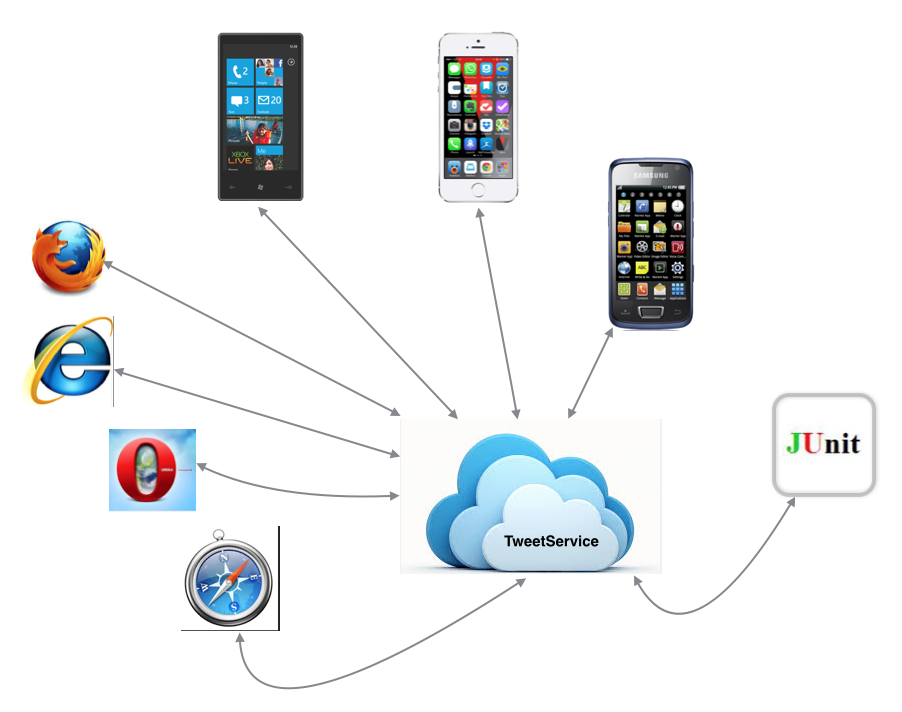
Proceed as follows:
- Create a Play app: in a terminal, switch to the folder in which you wish the app to reside.
play new TweetService
Then cd into TweetService folder and run:
play eclipsifyImport the project into your Eclipse workspace.
Activate the local database by uncommenting #db.default=mem in conf/application.conf
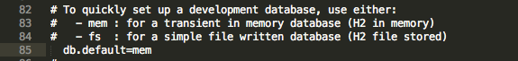
Expand the folder structure and observe that the model folder is empty:
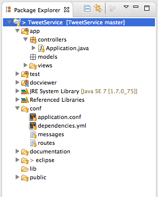
The file structure of the completed application is illustrated in Figure 3.
- Observe that we have deleted the views folder.
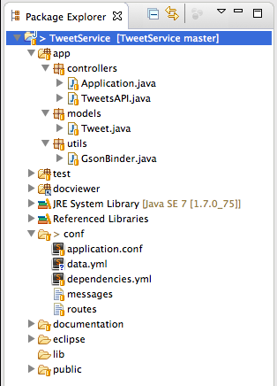
A study of Figure 2 reveals the changes required:
- Model: Tweet.java
- utils folder containing file GsonBinder.java
- controllers: TweetsAPI.java
It will be necessary to refactor the default routes file. Here is a sample for you to modify as necessary.
# Routes
# This file defines all application routes (Higher priority routes first)
# ~~~~
# Home page
GET / Application.index
# Tweeter (the user)
GET /api/tweeters TweetersAPI.getAllTweeters
GET /api/tweeters/{id} TweetersAPI.getTweeter
POST /api/tweeters TweetersAPI.createTweeter
DELETE /api/tweeters/{id} TweetersAPI.deleteTweeter
DELETE /api/tweeters TweetersAPI.deleteAllTweeters
# Tweet
GET /api/tweets TweetsAPI.getAllTweets
DELETE /api/tweets TweetsAPI.deleteAllTweets
GET /api/tweeters/{id}/tweets TweetsAPI.getTweets
GET /api/tweeters/{id}/tweets/{tweetId} TweetsAPI.getTweet
POST /api/tweeters/{id}/tweets TweetsAPI.createTweet
DELETE /api/tweeters/{id}/tweets/{tweetId} TweetsAPI.deleteTweet
# Ignore favicon requests
GET /favicon.ico 404
# Map static resources from the /app/public folder to the /public path
GET /public/ staticDir:public
# Catch all
* /{controller}/{action} {controller}.{action}Here is the GsonBinder class:
package utils;
import java.lang.annotation.Annotation;
import java.lang.reflect.Type;
import play.data.binding.Global;
import play.data.binding.TypeBinder;
import com.google.gson.JsonElement;
import com.google.gson.JsonParser;
@Global
public class GsonBinder implements TypeBinder<JsonElement>
{
public Object bind(String name, Annotation[] notes, String value, Class toClass, Type toType) throws Exception
{
return new JsonParser().parse(value);
}
}Here is the model code followed by some explanations:
package models;
import javax.persistence.Entity;
import javax.persistence.Id;
import play.db.jpa.GenericModel;
@Entity
public class Tweet extends GenericModel
{
@Id
public String id;
public String message;
public String datestamp;
}Notice the following points regarding the model class Tweet:
- It extends GenericModel, not Model as in previous Play apps which we developed (Donation, MyRent, WitPress).
- The annotation @Id means that we, the developers, are deciding the primary key, the id for the database table.
- The default Play behaviour to allow the framework to generate the id and assign it a value.
- We are choosing a differerent approach in our application: the reason will be given when we develop the client.
- It means also that the client will generate the id value and send it to the server app when a new Tweet is being created.
A key point to remember in designing this model class is that the field names we use here must be retained exactly in the client model.
- The access modifiers (public, private, protected) need not, however match.
- The field types must also match those in the client model.
- Thus we cannot have String id here and UUID id in the client model.
Finally, here is the code for a subset of the API classes:
package controllers;
import com.google.gson.Gson;
import com.google.gson.JsonElement;
import models.Tweet;
import play.mvc.Controller;
public class TweetsAPI extends Controller
{
static Gson gson = new Gson();
/**
*
* @param id : intended for tweeter id in later iteration
* @param body : the tweet to be created
*/
public static void createTweet(String id, JsonElement body)
{
Tweet tweet = gson.fromJson(body.toString(), Tweet.class);
tweet.save();
renderJSON(gson.toJson(tweet));
}
}package controllers;
import java.util.List;
import com.google.gson.Gson;
import com.google.gson.JsonElement;
import models.Tweet;
import models.Tweeter;
import play.mvc.Controller;
public class TweetersAPI extends Controller
{
static Gson gson = new Gson();
public static void getAllTweeters()
{
List<Tweeter> Tweeters = Tweeter.findAll();
renderJSON(gson.toJson(Tweeters));
}
public static void createTweeter(JsonElement body)
{
Tweeter tweeter = gson.fromJson(body.toString(), Tweeter.class);
tweeter.save();
renderJSON(gson.toJson(tweeter));
}
}Test this service as follow:
- Add a data.yml file with some sample data:
Tweet(tweet_1):
id: 39f5b200-898f-11e5-b435-0002a5d5c51b
message: tweet_1
datestamp: '14-11-2015-08-20'
Tweet(tweet_2):
id: 56611600-898f-11e5-8369-0002a5d5c51b
message: tweet_2
datestamp: '14-11-2015-08-21'Add a Bootstrap class in the default package (root):
import java.util.List;
import play.jobs.*;
import play.test.*;
import models.*;
@OnApplicationStart
public class Bootstrap extends Job
{
public void doJob()
{
if (Tweet.count() == 0)
{
Fixtures.deleteDatabase();
Fixtures.loadModels("data.yml");
}
}
}- Launch the server from within the project folder in a terminal:
play runIn a browser run:
http://localhost:9000This should generate a blank screen. Attempt to determine why this is so.
Check the database. The output should be similar to that shown in Figure 4.
http://localhost:9000/@db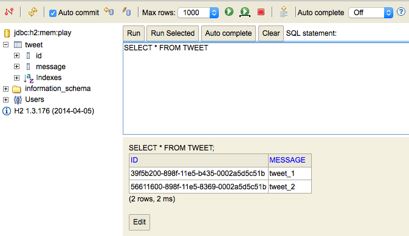
Test App
A walking skeleton test app is available to download from here.
- Save to a temporary folder and import into Eclipse as shown in Figure 1.
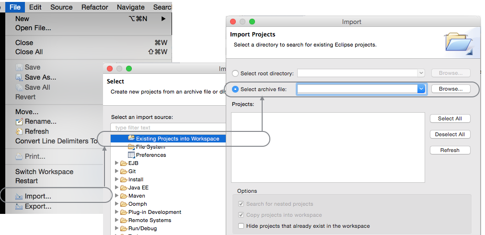
Here is the expanded project structure:
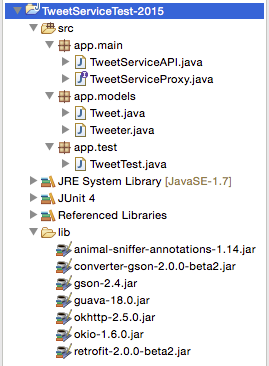
Observe the similarity between fields in the models in this test app and the service app (TweetService).
- Note that initially we will only test against the model class Tweet. Testing the class Tweeter, representing a user, will follow.
package app.models;
import java.util.Date;
import java.util.UUID;
import com.google.common.base.Objects;
import static com.google.common.base.MoreObjects.toStringHelper;
public class Tweet
{
public String id;
public String message;
public String datestamp;
public Tweet(){}
public Tweet(String message)
{
this.id = UUID.randomUUID().toString();
this.message = message;
this.datestamp = new Date().toString();
}
@Override
public boolean equals(final Object obj)
{
if (obj instanceof Tweet)
{
final Tweet other = (Tweet) obj;
return Objects.equal(id, other.id)
&& Objects.equal(message, other.message)
&& Objects.equal(datestamp, other.datestamp) ;
}
else
{
return false;
}
}
@Override
public String toString()
{
return toStringHelper(this)
.addValue(id)
.addValue(message)
.addValue(datestamp)
.toString();
}
}Study the code in the API and Proxy classes:
package app.main;
import java.util.List;
import com.google.gson.Gson;
import com.google.gson.GsonBuilder;
import app.models.Tweet;
import retrofit.Call;
import retrofit.GsonConverterFactory;
import retrofit.Response;
import retrofit.Retrofit;
public class TweetsAPI
{
private String service_url = "http://localhost:9000";
private TweetServiceProxy service;
public TweetsAPI()
{
Gson gson = new GsonBuilder().create();
Retrofit retrofit = new Retrofit.Builder().baseUrl(service_url)
.addConverterFactory(GsonConverterFactory
.create(gson))
.build();
service = retrofit.create(TweetServiceProxy.class);
}
public Tweet createTweet(String id, Tweet newTweet) throws Exception
{
Call<Tweet> call = (Call<Tweet>) service.createTweet(id, newTweet);
Response<Tweet> returnedTweet = call.execute();
return returnedTweet.body();
}
}
package app.main;
import app.models.Tweet;
import retrofit.Call;
import retrofit.http.Body;
import retrofit.http.POST;
public interface MyTweetServiceProxy
{
@POST("/api/tweets")
Call<Tweet> createTweet(@Body Tweet tweet);
}Note the URL in the TweetsAPI class:
private String service_url = "http://localhost:9000";This IP address works for the test app but not for the Android app if running within Genymotion or Android emulators. Following is a set of service_urls for various target devices and a typical Heroku deployment:
public String service_url = "http://10.0.2.2:9000"; //Android Emulator
public String service_url = "http://10.0.3.2:9000"; //Genymotion
public String service_url = "https://donation-service-2015.herokuapp.com/";Run the test and verify it passes. In this walking skeleton we perform only 1 test, namely to create a tweet and check that the tweet echoed back across the network matches the one created.
As you introduce further tests, TweetsAPI and TweetServiceProxy classes will require additional fuctionality.
In this step we have tested the API method createTweet. As part of reproducing this walking skeletion you are recommended to also test:
- getAllTweeters
- createTweeter
These three API calls, createTweet, createTweeter and getAllTweeters, are invoked in the Android client part of this lab.
This concludes a walking skeleton of the test and service apps.
Next we shall address the Android client and test it against the same service application developed here.
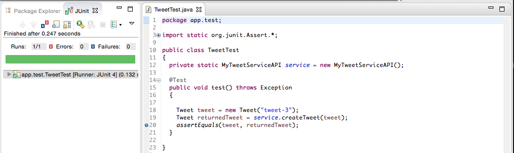
The relationships between the Play routes, api and proxy files is illustrated in Figure 4.
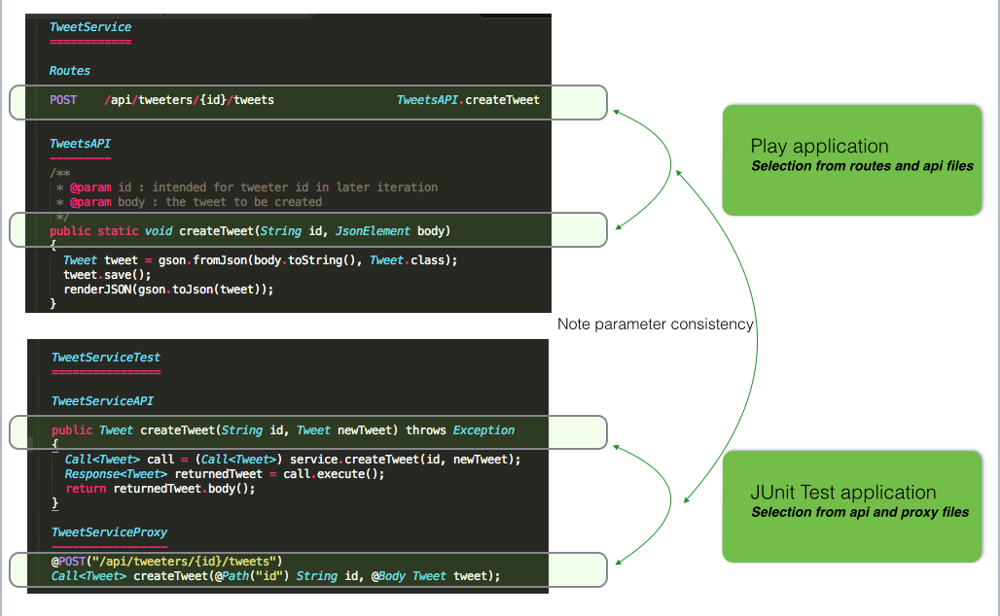
Android client
We now address the refactoring of assignment 1 app into an Android client capable of interacting with the server-side Play app (TweetService).
The steps outline below comprise one of many possible approaches to developing MyTweet native Android client.
The baseline version of MyTweet is shown here:

As already pointed out, this is a standalone app and the purpose of this lab is to refactor it so that its data will reside on another app (TweetService) that will be located on a server (localhost or the cloud - Heroku).
The design approach we adopt here will facilate the introduction of a user model and associated views in later versions of the assignment.
- In particular we will introduce a new activity which we shall name Welcome.
- A key reason for this is to provide a convenient location to retrieve the server-side data. It is also a convenient location for the log in and sign up buttons.
- Here we retrieve a list of tweeters (users). This is feasible only in a prototypical case. It would be completely unrealistic to do so in a production environment.
- The number of monthly active Twitter users worldwide in quarter three 2015 is reported at over 300 million.
- We use the tweeter list to determine
- if a tweeter is registered or not as it attempts to log on
- and to check if a tweeter attempting to register has already done so.
- Here we retrieve a list of tweeters (users). This is feasible only in a prototypical case. It would be completely unrealistic to do so in a production environment.
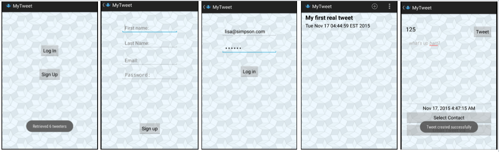
Android Client (API)
Here we present a screenshot of the folder structure used in preparing this lab. It is appreciated that yours will likely vary considerably from this.
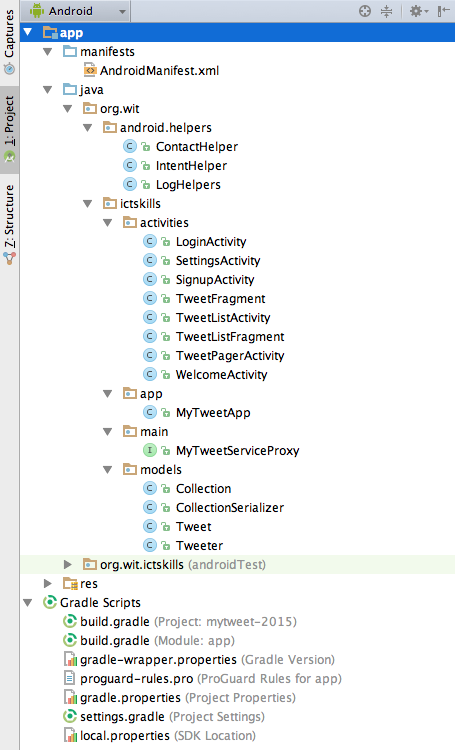
Here is the code for the http module classes: Request, Response, Rest followed by the TweetsAPI class.
You may find it necessary to refactor the package name to suit your folder structure.
The service url is located in MyApp. Here is a sample list (already presented):
public String service_url = "http://10.0.2.2:9000"; //Android Emulator
public String service_url = "http://10.0.3.2:9000"; //Genymotion
public String service_url = "https://donation-service-2015.herokuapp.com/";The Retrofit client is initialized in the MyTweetApp class as shown here:
package org.wit.ictskills.app;
import org.wit.ictskills.main.MyTweetServiceProxy;
import org.wit.ictskills.models.Tweeter;
import java.util.List;
import android.app.Application;
import com.google.gson.Gson;
import com.google.gson.GsonBuilder;
import retrofit.GsonConverterFactory;
import retrofit.Retrofit;
import static org.wit.android.helpers.LogHelpers.info;
public class MyTweetApp extends Application
{
public String service_url = "http://10.0.3.2:9000"; //Genymotion
public MyTweetServiceProxy tweetService;
public List<Tweeter> tweetersList;
public Tweeter loggedOnTweeter;
@Override
public void onCreate()
{
super.onCreate();
Gson gson = new GsonBuilder().create();
Retrofit retrofit = new Retrofit.Builder()
.baseUrl(service_url)
.addConverterFactory(GsonConverterFactory.create(gson))
.build();
tweetService = retrofit.create(MyTweetServiceProxy.class);
info(this, "MyTweet app launched");
}
}Here is a code snippet from MyTweetServiceProxy containing the API calls used in this lab.
package org.wit.ictskills.main;
import org.wit.ictskills.models.Tweet;
import org.wit.ictskills.models.Tweeter;
import java.util.List;
import retrofit.Call;
import retrofit.Callback;
import retrofit.http.Body;
import retrofit.http.DELETE;
import retrofit.http.GET;
import retrofit.http.POST;
import retrofit.http.Path;
public interface MyTweetServiceProxy
{
// Create a tweeter
@POST("/api/tweeters")
Call<Tweeter> createTweeter(@Body Tweeter tweeter);
// Get all tweets
@GET("/api/tweets")
Call<List<Tweet>> getAllTweets();
// Create a tweet
@POST("/api/tweeters/{id}/tweets")
Call<Tweet> createTweet(@Path("id") String id, @Body Tweet tweet);
}Android Client (Create Tweet)
Here is a quick-start approach to develop the Android client:
- Refactor the Android MyTweet application that you developed for Assignment 1 to enable it transmit a tweet to the sevice app running on local host:
- Implement Retrofit Callback interface
- Implement the Callback methods
- Intervene at the point where you created a Tweet and invoke a Retrofit API call to transmit the tweet to the service.
// Retrofit Callback interface
public class TweetFragment extends Fragment implements TextWatcher,
OnClickListener,
Callback<Tweet>
{
...
...
} // Make the API call once the tweet has been fully formed.
Call<Tweet> call = app.tweetService.createTweet(tweet.id, tweet);
call.enqueue(this); // Implement the Callback methods
@Override
public void onResponse(Response<Tweet> response, Retrofit retrofit)
{
Tweet returnedTweet = response.body();
// If returned tweet matches the tweet we created and transmitted to the server then success.
if (tweet.equals(returnedTweet))
{
Toast.makeText(getActivity(), "Tweet created successfully", Toast.LENGTH_LONG).show();
}
else
{
Toast.makeText(getActivity(), "Failed to create tweet", Toast.LENGTH_LONG).show();
}
}
@Override
public void onFailure(Throwable t)
{
Toast.makeText(getActivity(), "Failed to create tweet due to unknown network issue", Toast.LENGTH_LONG).show();
}Once the above has been completed successfully you could proceed by adding log in and sign up screens.
In the WelcomeActivity class, retrieve the list of tweets from the server , the code for which is provided below.
- Figure 1 shows a basic Welcome activity screen.
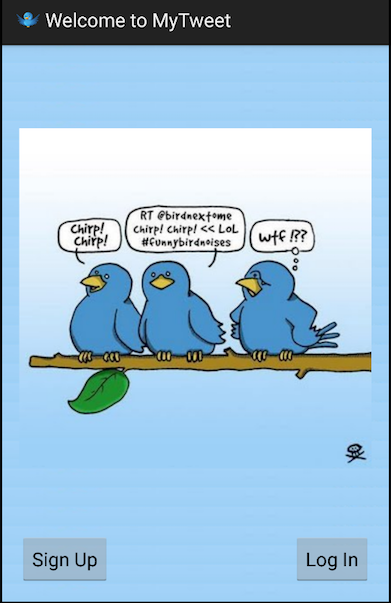
Note the following:
- WelcomeActivity implements the Retrofit client Callback
interface. - This necessitates implementation of its associated methods:
- onResponse
- onFailure
- This necessitates implementation of its associated methods:
- The call to the server to retrieve the list of tweeters is made in the onResume method located in the TweetFragment class.
- If the call is successful the list of tweets becomes available in onResponse.
- This allows us to authenticate a new tweeter.
- Once the tweeter logs in, a subset if its tweets could then be downloaded. This has not been addressed in this lab. We simply download all tweets.
- If the network call fails then an exception is thrown and it's message is toasted in onFailure.
- If the call is successful the list of tweets becomes available in onResponse.
Here is a snippet from WelcomeActivity.java
package org.wit.ictskills.activities;
import android.os.Bundle;
import android.app.Activity;
import android.view.View;
import android.widget.Button;
import android.widget.Toast;
import org.wit.android.helpers.IntentHelper;
import org.wit.ictskills.R;
import org.wit.ictskills.app.MyTweetApp;
import org.wit.ictskills.models.Tweeter;
import java.util.List;
import retrofit.Call;
import retrofit.Callback;
import retrofit.Response;
import retrofit.Retrofit;
public class WelcomeActivity extends Activity implements Callback<List<Tweeter>>
{
private MyTweetApp app;
@Override
protected void onCreate(Bundle savedInstanceState)
{
super.onCreate(savedInstanceState);
setContentView(R.layout.activity_welcome);
app = (MyTweetApp) getApplication();
}
@Override
public void onResume()
{
super.onResume();
Call<List<Tweeter>> call = app.tweetService.getAllTweeters();
call.enqueue(this);
}
@Override
public void onResponse(Response<List<Tweeter>> response, Retrofit retrofit)
{
app.tweetersList = response.body();
int numberTweeters = app.tweetersList.size();
Toast.makeText(this, "Retrieved " + numberTweeters + " tweeters", Toast.LENGTH_LONG).show();
}
@Override
public void onFailure(Throwable t)
{
Toast.makeText(this, "Failed to retrieve tweeter list", Toast.LENGTH_LONG).show();
}
}Android Client (Model)
Here is the code for Tweet.java, the model class.
- The serialization-related code has been removed in the interest of clarity.
- Observe how the field names correspond to those in the server app (TweetService).
- Note the difference in the type used for the id field here compared to this week's Donation labs.
package org.wit.mytweet.model;
import java.util.Date;
import java.util.UUID;
public class Tweet
{
/**
* The id is required immediately on the client-side
* We send to id the server in the http call and configure the server to allow this practice
*/
public String id;
public String message;
public String datestamp;
public Tweet(String message)
{
id = UUID.randomUUID().toString();
datestamp = new Date().toString();
this.message = message;
}
}Primary key
Generating the Tweet database table id in the client
Default Play framework behaviour is to generate a default Long id primary key.
Let's explore why this would be problematical for us.
Here is a typical code snippet from a list fragment:
@Override
public boolean onOptionsItemSelected(MenuItem item)
{
switch (item.getItemId())
{
...
case R.id.menuTweet:
Tweet tweet = new Tweet(); //Item 1
tweetlist.addTweet(tweet);
Intent i = new Intent(getActivity(), TweetPagerActivity.class);
i.putExtra(TweetFragment.EXTRA_TWEET_ID, tweet.id; //Item 2
startActivityForResult(i, 0);
return true;
default:
return super.onOptionsItemSelected(item);
}
}Item 1: We create a default Tweet object.
Item 2: We put an Extra to the new Intent. This extra has as an argument the value of the Tweet id:
- tweet.id
Were we to adopt the default Play framework approach, then it would be necessary to make an extra network call to obtain the object id.
Our approach requires a simple change to the service model:
Here is the default:
@Entity
public class Tweet extends Model
{
public Long id;
}The non-Play approach is reflected here. There are three changes:
- The class is now derived from GenericModel.
- the @Id annotation is introduced.
- The id type is String to accommodate the 128-bit UUID. Long has 64 bits.
@Entity
public class Tweet extends GenericModel
{
@Id
public String id;
}Date field
For the sake of simplicity, all the sample model fields used earlier in this lab are String type.
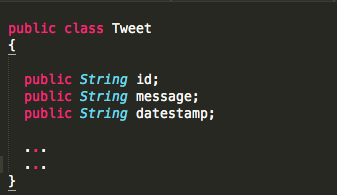
The choice will prove problematic for those who require to sort tweets with reference to their timestamps.
An obvious choice of type where we require to sort tweets would be java.util.Date.
This, however, poses a problem in testing. For reasons that we have not fully researched, if Date is used as the datestamp type then the JUnit test fails. An examination of underlying date values of the outgoing and returned tweet dates reveal differences. See Figure 2.
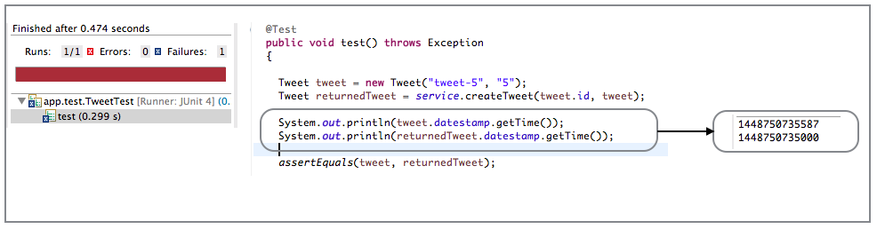
A Date object represents the number of milliseconds since January 1 1970. See documentation here. This number, a long type, is returned by Date.getTime().
Using the Java type Long avoids the problem described above.
Tweet.datestamp can be declared and initialized thus:
public Long datestamp;
public Tweet()
{
...
this.datestamp = new Date().getTime();
}The datestamp is easily formatted so as to comply with one's display requirements. Here is some sample code that could be used as a template:
/**
* Formats the datestamp field by first converting
* to a Date object and then using the private
* helper method formattedDate.
*/
public String getDateString()
{
return formattedDate(new Date(datestamp));
}
/**
* @param date A java.util.Date object
* @see <a href="http://docs.oracle.com/javase/tutorial/i18n/format/simpleDateFormat.html">Date Format</a>
* @see <a href="http://docs.oracle.com/javase/7/docs/api/java/text/SimpleDateFormat.html">Simple Date Format</a>
* @return A formatted date string
*/
private String formattedDate(Date date)
{
DateFormat sdf = new SimpleDateFormat("EEE d MMM yyyy H:mm");
sdf.setTimeZone(TimeZone.getTimeZone("GMT"));
return sdf.format(datestamp);
}Resources
- A draft development timeline is available here